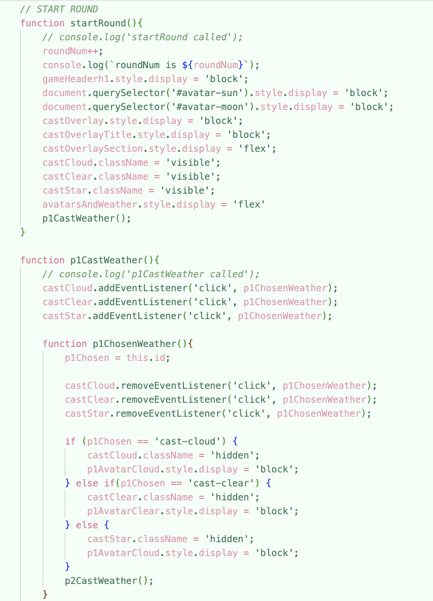
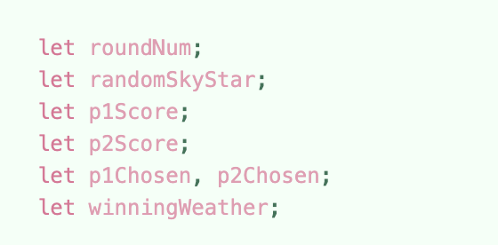

Entry 3 - 03.18.26
Process Visualization
Comp Sci PHD student Arunpreet Sandhu critiqued my work and has many years of experience both in programming and game dev.
He said overall that my code looked pretty good, that the logic made sense. He mentioned that it's good to write code in a way that makes it easier for others to understand what's going on. For example, he suggested putting the player function calls in the same spot to easily see how many players they're are at a quick glance.
Another thing he suggested was putting the player data into an object for concision.

